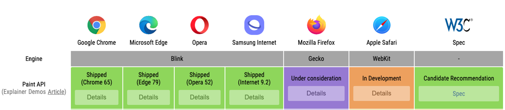

What is Houdini?
CSS Houdini is an umbrella term that describes a set of low-level APIs that exposes parts of the CSS engine, giving developers the power to extend CSS by hooking into the styling and layout process of a browser’s rendering engine.
Houdini is a group of APIs that give developers direct access to the CSS Object Model (CSSOM), enabling developers to write code the browser can parse as CSS, thereby creating new CSS features without waiting for them to be implemented natively in browsers.
Houdini enables more semantic CSS with the Typed Object Model. Developers can define advanced CSS custom properties with syntax, default values, and inheritance through the Properties and Values API.
It also introduces paint, layout, and animation worklets, which open up a world of possibilities, by making it easier for authors to hook into the styling and layout process of the browser's rendering engine.
Worklet
Worklets are scripts that run during render and are independent of the main JavaScript environment. They are an extension point for rendering engines. They are designed for parallelism (with 2 or more instances) and thread-agnostic, have reduced access to the global scope and are called by the rendering engine when needed. Worklets can be run only on HTTPS (on production environment) or on localhost (for development purposes).
Houdini introduces following Worklets to extend the browser render engine:
- Paint Worklet - Paint API
- Animation Worklet - Animation API
- Layout Worklet - Layout API
Paint Worklet
There are several steps required in defining a Paint Worklet:
-
Write and register a Paint Worklet using
the
registerPaintfunction. -
Call the Worklet in HTML file or main JavaScript file
using
CSS.paintWorklet.addModulefunction. -
Use the
paint()function in CSS with a Worklet name and optional input arguments.
Let’s take a look at the registerPaint function which is
used to register a Paint Worklet and define its functionality.
registerPaint("paintWorketExample", class {
static get inputProperties() { return ["--myVariable"]; }
static get inputArguments() { return [""]; }
static get contextOptions() { return {alpha: true}; }paint(ctx, size, properties, args) {
/* ... */
}
});
The registerPaint function consists of several parts:
-
inputProperties:An array of CSS custom properties that the Worklet will keep track of. This array represents dependencies of a paint worklet. -
inputArguments:An array of input arguments that can be passed from `paint` function from inside the CSS -
contextOptions: allow or disallow opacity for colors. If set to `false`, all colors will be displayed with full opacity. -
paint: the main function that provides the following arguments:-
ctx: 2D drawing context, almost identical to Canvas API’s 2D drawing context. -
size: an object containing the width and height of the element. Values are determined by the layout rendering process. Canvas size is the same as the actual size of the element. -
properties: input variables defined ininputProperties. -
args: an array of input arguments passed inpaintfunction in CSS.
-
After the Worklet has been registered, it needs to be invoked in the HTML file by simply providing a path to the file.
CSS.paintWorklet.addModule("path/to/worklet/file.js");Any Worklet can also be added from an external URL (from a Content Delivery Network, for example) which makes them modular and reusable.
CSS.paintWorklet.addModule("https://url/to/worklet/file.js");
After the Worklet has been called, it can be used inside CSS using
the paint function. This function accepts the Worklet’s
registered name as a first input argument and each input argument that
follows it is a custom argument that can be passed to a Worklet
(defined inside Worklet’s inputArguments). From that
point, the browser determines when to call the Worklet and which user
actions and CSS custom properties value change to respond to.
.exampleElement {
/* paintWorkletExample - name of the worklet
blue - argument passed to a Worklet */
background-image: paint(paintWorketExample, blue);
}Browser Support
The CSS Painting API is currently one of the best-supported Houdini APIs, its spec being a W3C candidate recommendation. It is currently enabled in all Chromium-based browsers, partially supported in Safari, and is under consideration for Firefox
The CSS Painting API is currently supported on Chromium-based browsers.
But even without full browser support, you can still get creative with the Houdini Paint API and see your styles work across all modern browsers with the CSS Paint Polyfill.
Examples
Connections
See the Pen CSS Houdini - Paint Worklet - Connections by Carla Bruckmann (@carlabruckmann) on CodePen.
Circles
See the Pen CSS Houdini - Paint Worklet - Circles by Carla Bruckmann (@carlabruckmann) on CodePen.
Sparkles
See the Pen CSS Houdini - Paint Worklet - Sparkles by Carla Bruckmann (@carlabruckmann) on CodePen.
Ripple Effect
See the Pen CSS Houdini - Paint Worklet - Ripple Effect by Carla Bruckmann (@carlabruckmann) on CodePen.
Curved Line
See the Pen CSS Houdini - Paint Worklet - Curved Line by Carla Bruckmann (@carlabruckmann) on CodePen.
References
The content of this page is based on: